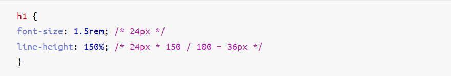
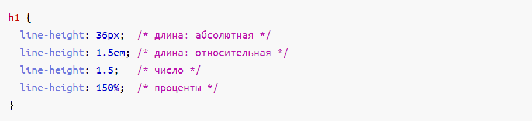

Глава 3.13. Какие единицы измерения использовать для line-height?
Line-height, или интерлиньяж, устанавливает межстрочный интервал текста и принимает
четыре типа значений:
Число. В CSS определены два типа чисел: <integer> — целые числа (0, 1, 2, …
9) и <number> —
вещественные числа (1.2, 1.5, 1.7). Line-height можно установить любое число в
качестве
значения, например, line-height: 1.2;.
Длина. Указывается как число и идентификатор отношения. Дело в том, что длина может быть
относительной и абсолютной, и только верстальщик может понять, как соотносится
line-height к
размеру шрифта. Самыми популярными относительными идентификаторами являются em и
rem
(line-height: 1.2rem), а абсолютными — px
(line-height: 32px).
Процентное соотношение. Значение, которое является некоторой долей другого значения. Проценты
так же, как и длина, состоят из числа и идентификатора %
(line-height: 110%;). Когда вы
указываете % для line-height, как и любую другую относительную единицу
измерения, за отношением
вы обращаетесь к размеру шрифта:

Пример кода
Ключевое слово normal. За таким простым словом прячется сложная механика.
Normal определяет
предпочтительную высоту строки автоматически на основе метрик шрифта, то есть для каждого шрифта
итоговое значение будет различным. Поэтому такое значение практически не используется — оно
слишком непредсказуемо.
Интересный факт: для нулевой длины и процентного соотношения идентификатор отношения не нужен и тогда
длина становится числом — line-height: 0;.
В итоге осталось три рабочих варианта: длины, число и проценты.

Пример кода
Чтобы понять, какие значения лучше использовать, нужно разобраться в недостатках и преимуществах
каждого типа значения.
Если забыть про пользователей, то можно использовать то значение, которое вам по душе — все они
работают примерно одинаково. Но если начать думать о том, как взаимодействуют с интерфейсом ваши
пользователи, то можно выделить два способа: масштабирование и изменение размера текста по
умолчанию.
Чтобы вы почувствовали разницу в единицах измерения, вам нужно использовать относительные единицы
измерения и для font-size. Если вы решили, что у font-size будут
использоваться абсолютные значения,
например, font-size: 24px, то нет разницы, что указывать в line-height —
поведение будет одинаковым,
так как относительные значения line-height опираются на значения в
font-size.
Вернёмся к способам взаимодействия с интерфейсом. Масштабирование помогает увеличивать и уменьшать
интерфейс вашего сайта так, как пользователь посчитает нужным. Например, так могут делать
пользователи с нарушениями зрения. При этом значение у line-height не влияет на
поведение
межстрочного интервала, так как font-size не изменяется вместе с масштабированием.
Изменение размера текста также позволяет пользователям с нарушениями зрения установить тот размер
шрифта по умолчанию, который им удобен. В Google Chrome размер текста по умолчанию стоит
16px
(medium). Его можно изменить с 9px (verySmall) до 24px (veryLarge). И здесь как раз
пригодятся
относительные единицы измерения у font-size, так как они будут опираться именно на этот
размер
текста по умолчанию в браузере. А line-height с относительными единицами будет
опираться на
изменяющийся font-size. Таким образом мы помогаем людям с нарушениями зрения.
Хорошо, мы нашли ситуацию, где относительные единицы лучше абсолютных. Но относительных единиц целых
три вида — 150%, 1.5, 1.5em. Какой из них лучше выбрать?
Здесь нет предпочтительного варианта, так
как механика у всех трёх видов одинаковая. Вы можете выбрать тот вариант, который вам больше
нравится. Но мы можем посоветовать вариант с вещественными числами, потому что в этом случае вам
может быть проще ориентироваться, например: «интерлиньяж в полтора раза больше, чем размер шрифта»,
поэтому можно так и записать — 1.5. Относительные единицы выглядят выгоднее и в том
случае, когда
будет изменяться размер шрифта. Если изменится размер шрифта, то пропорция межстрочного интервала
может остаться прежней. С абсолютными значениями точно пришлось бы менять как
font-size, так и
line-height.